6.1 Overview
Layer 5 sits between the user and the runtime and between the runtime and the user. Its job is to ensure that nothing unsafe, non-compliant or malicious enters the agent and that nothing unsafe, ungrounded or leaking leaves it. The diagram places it in the middle of the architecture with arrows to Layers 2, 4, 6 and 8 for a reason: guardrails are consulted at the boundary, they read policy from governance, they may use models through the gateway, and every verdict is observable.
Two blocks:
- Input guardrails: prompt injection detection, PII and secrets detection, toxicity/hate/abuse detection, input validation, policy/compliance check, context sanitisation.
- Output guardrails: toxicity/harm detection, hallucination detection, PII/secrets masking, fact verification, policy/compliance check, response validation, refusal/safe response.
Guardrails are not a substitute for authorization, sandboxing or tool permissions. They reduce the probability of bad content; Layers 3 and 9 bound the blast radius when they miss.
6.2 Architecture

Mermaid source diagrams/guardrails-flow.mmd
flowchart LR
IN[Incoming request] --> S1[Schema validation]
S1 --> S2[Prompt injection & jailbreak classifier]
S2 --> S3[PII / secret detection]
S3 --> S4[Toxicity / abuse filter]
S4 --> S5[Policy & compliance rules]
S5 --> S6[Context sanitization]
S6 -->|pass| RUN[Agent Runtime]
S2 -->|block| REJ[Refusal / safe response]
S4 -->|block| REJ
S5 -->|block| REJ
S3 -->|mask| S4
RUN --> O1[Response validation]
O1 --> O2[Hallucination / grounding check]
O2 --> O3[Fact verification]
O3 --> O4[PII / secrets masking]
O4 --> O5[Toxicity / harm detection]
O5 --> O6[Policy compliance]
O6 -->|pass| OUT[Deliver response]
O2 -->|fail| REGEN[Regenerate with feedback]
O6 -->|fail| REJ
REGEN --> RUN
Each pipeline is an ordered list of independent checks. A check returns one of four verdicts:
allow– continue.mask– transform the text (redact) and continue.flag– continue, but record the flag; flags can trigger human review or stricter output checks.block– stop; return a safe response.
Checks are ordered cheap-to-expensive: schema and regex checks in microseconds, classifier models in tens of milliseconds, LLM judges in seconds. Short-circuit on the first block. Every verdict is emitted as a telemetry event with the check name, action and latency so false positives can be tuned.
6.2.1 Input guardrails
Prompt injection and jailbreak detection. Layered:
- Heuristics for known patterns ("ignore previous instructions", fake role tags, override markers, hidden Unicode).
- A dedicated classifier (Meta Prompt Guard, ProtectAI's DeBERTa injection model, Lakera Guard, Azure Prompt Shields) on user input and, importantly, on tool and document content before it enters the prompt: indirect injection through retrieved pages or emails is the most common real-world vector.
- Structural defences that do not depend on detection: system prompt and user content in separate roles, tool output wrapped as data, instructions to the model that content in tool results is never to be followed, and, above all, tool permissions that make a hijacked agent unable to do damage.
PII detection. Regex for structured identifiers (emails, phones, SSNs, cards, IBANs) and NER models (Microsoft Presidio, spaCy, AWS Comprehend PII, Google DLP) for names and addresses. Policy decides per use case: mask before sending to an external model; allow inside a trusted boundary; block if the channel is not permitted to carry PII.
Secret detection. API keys, tokens, private keys, JWTs (regex families from gitleaks/TruffleHog). Secrets in input are always masked and the event flagged: a user pasting a production key into a chat is an incident.
Toxicity, hate and abuse. Classifiers: Llama Guard (multi-category, open weights), OpenAI Moderation API, Perspective API, Azure AI Content Safety, Detoxify. Apply with thresholds tuned per product; enterprise assistants usually block less on input (users may quote abusive customer messages) and more on output.
Input validation. Length, encoding, attachment type and size, language allow-list, structured fields.
Policy and compliance check. Tenant-specific denied topics, regulatory constraints (no investment advice, no medical diagnosis), usage terms. Implemented as rule lists and, for nuanced policies, a small LLM classifier with the policy text in its prompt.
Context sanitisation. Strip zero-width and bidirectional control characters, normalise Unicode, remove markup that mimics prompt structure, collapse repeated whitespace. Applied to user input and to every retrieved or tool-returned document.
6.2.2 Output guardrails
Response validation. Format (JSON when expected), length, presence of required sections, no leaked internal markers (tool names, system prompt fragments).
Hallucination detection (grounding). An LLM judge or an NLI model compares each claim in the answer against the evidence collected during the run (tool results, retrieved chunks). Outputs a faithfulness score and the unsupported claims. Below threshold: regenerate with the unsupported claims listed as feedback; after N failures, return a hedged answer that marks uncertainty.
Fact verification. For high-stakes domains, verify specific claim types against authoritative sources: numbers against the database, dates and names against the knowledge graph, citations against the retrieved set (a cited document must exist in the run's evidence).
PII and secrets masking. Same detectors as input, applied to output; catches leakage from memory, documents or the model.
Toxicity and harm detection. Same classifiers, stricter thresholds.
Policy and compliance. Output-side rules: mandatory disclaimers, forbidden recommendations, brand and tone rules.
Refusal / safe response. A fixed, reviewed message per block category, plus an audit record. Refusals should tell the user what they can do (rephrase, contact support), never echo the blocked content.
6.3 Implementation guide
6.3.1 Technology options
| Technology | Type | Strengths | Considerations |
|---|---|---|---|
| NVIDIA NeMo Guardrails | Framework (Colang dialog rails, input/output/retrieval rails) | Programmable flows, integrates with LangChain, supports fact-checking and jailbreak rails | Learning curve for Colang; adds latency per rail |
| Guardrails AI | Framework (validators, "guards", structured output enforcement) | Large validator hub, Pydantic-style structured output validation, re-ask loops | Validators vary in quality; mostly Python |
| Llama Guard 3 / 4 | Open-weight safety classifier | Multi-category, tunable, self-hostable, multimodal | Needs GPU serving (vLLM); ~100–300 ms |
| Meta Prompt Guard | Open-weight injection classifier | Small, fast, dedicated to injection/jailbreak | Complements, does not replace, structural defences |
| OpenAI Moderation API | Hosted classifier | Free, fast, multi-category | Data leaves boundary; English-centric |
| Azure AI Content Safety / Prompt Shields | Hosted | Enterprise SLAs, injection and grounding detection | Azure-bound |
| Microsoft Presidio | PII detection/anonymisation library | Extensible recognisers, self-hosted | Tuning per locale |
| Lakera Guard, Protect AI, Arthur | Commercial | Managed detection with dashboards | Cost; vendor dependency |
6.3.2 Placement
- Input pipeline: in the API service after request validation and before enqueueing the run (fail fast, cheap).
- Retrieval/tool-result pipeline: in the action executor's sanitisation step (injection classifier + sanitisation on every result).
- Output pipeline: in the orchestrator's final node before the response builder; streaming outputs are checked in chunks with a final full-text pass, and the client is told to retract on a late block.
6.3.3 Latency budget
Guardrails add latency on the critical path. Typical budget: input ≤ 150 ms (regex + one classifier), output ≤ 1.5 s (one LLM judge on the final text). Run independent checks concurrently. Run the expensive grounding judge only when the answer contains factual claims (a classifier or simple heuristics decide).
6.3.4 Tuning
Log every verdict with the (masked) text hash. Sample blocks and flags weekly for human review; compute precision per check; adjust thresholds and rules. Maintain a regression suite of known attacks (public jailbreak datasets plus your own red-team findings) that runs in CI against the pipeline.
6.4 Example implementation
Composing the pipelines (from code-examples/guardrails.py):
input_rails = build_input_pipeline(gateway, denied_topics=tenant.policy.denied_topics)
output_rails = build_output_pipeline(gateway)
res = await input_rails.run(user_text, {"max_input_chars": 20_000})
if not res.allowed:
return SafeResponse(res.safe_response, reason=res.verdicts[-1].reason)
run = await orchestrator.run(request=res.text, ...)
out = await output_rails.run(run["answer"], {"evidence": run["results"]})
answer = out.text if out.allowed else out.safe_response
A grounding judge check:
out = await gateway.complete(task_class="simple", temperature=0, max_tokens=200, messages=[
{"role": "system", "content": "You are a fact-checker. Given EVIDENCE and ANSWER, list claims in the "
"ANSWER not supported by the EVIDENCE. Respond as JSON {\"faithfulness\": 0..1, \"unsupported\": [...]}"},
{"role": "user", "content": json.dumps({"EVIDENCE": evidence, "ANSWER": text})[:30_000]}])
NeMo Guardrails configuration equivalent:
rails:
input:
flows: [self check input, check jailbreak, mask sensitive data on input]
retrieval:
flows: [mask sensitive data on retrieval]
output:
flows: [self check output, self check facts, mask sensitive data on output]
6.5 Best practices
- Common mistakes. Relying on detection alone against injection; running only on user input and not on tool/document content; blocking with a generic message that hides why; guardrails with no metrics (unknown false-positive rate); sending PII to an external moderation API to check for PII.
- Optimisation. Order checks by cost; parallelise independent checks; skip the grounding judge for non-factual outputs; cache classifier results for repeated content (retrieval chunks).
- Security. Guardrail models are models: version them, evaluate them, and keep their prompts out of user reach; make refusals non-informative about the detection mechanism; log verdicts to the audit trail.